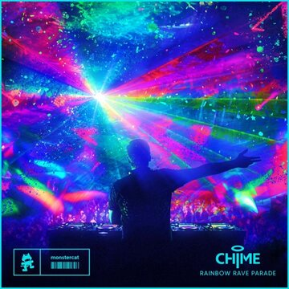
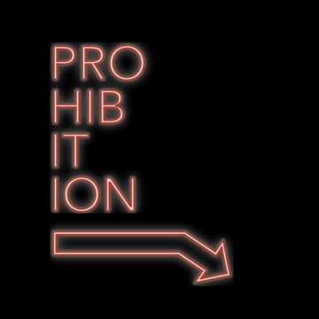

LIGHTER EDM
This is the guide of some of the happier EDM sub genre examples. Below you will find five select genres, an example linked with Spotify, an explanation of the characteristics of each displayed genre, and an image of the song example
Genre Examples
Melodic Dubstep
Melodic dubstep is characterized by its tonal drops and lighthearted nature, while still carrying the heavily modulated and impactful percussion of most dubstep
Electro-Swing
Electro-swing is characterized by its electronic enhancement of swing music and it's reference to early twentieth century culture
Drum & Bass

Drum and bass is characterized by its interruptive breakbeat style percussion and faster tempo than normal EDM
Future Bass

ILLENIUM - Sound of Walking Away
Future bass is characterized by its main layered hypersaw wave basses and its usual application of emotional melodies
House
House is characterized by its repetitive kicks and 4/4 dance pattern along with it's common empty drop nature and heavy bass
Ambient

KOAN Sound - Led by Ancient Light
Ambient is characterized by its smooth arid orchestral aurora and sometimes mixed with deep dub sounds or rough textures